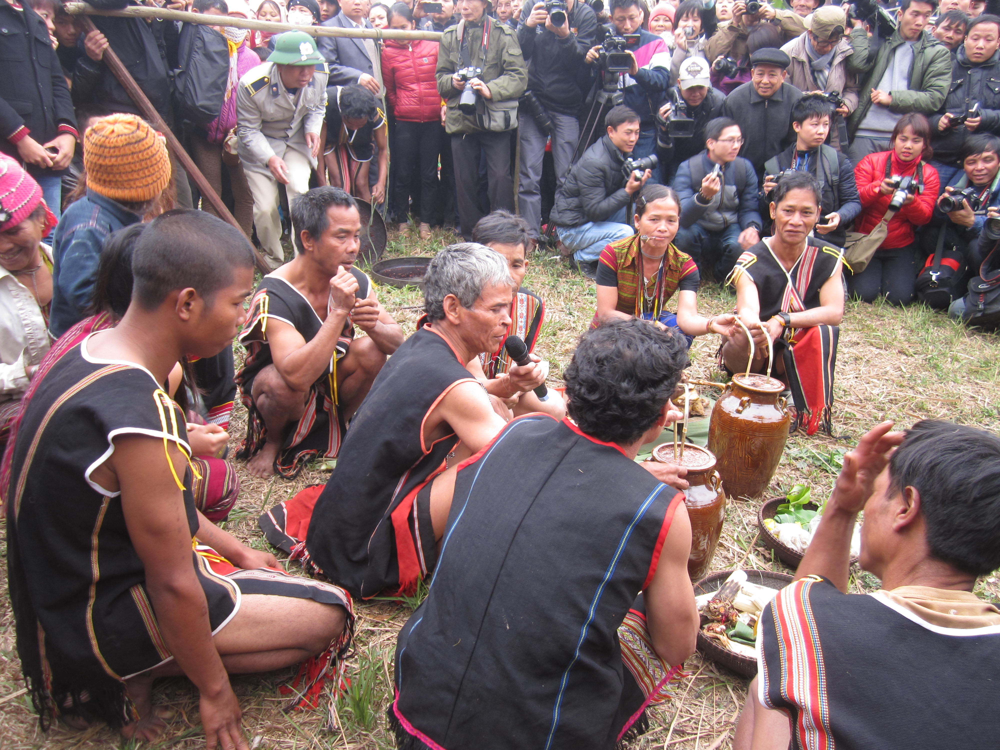
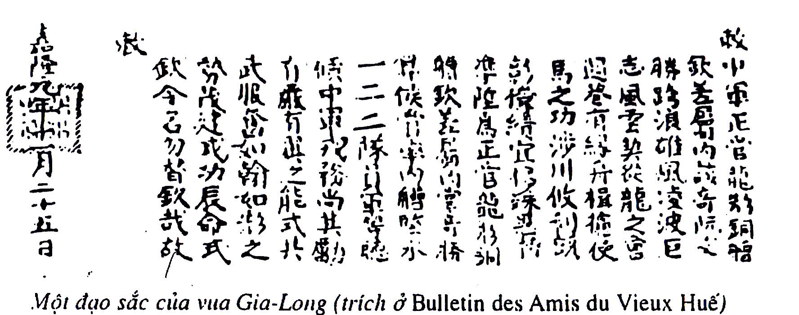
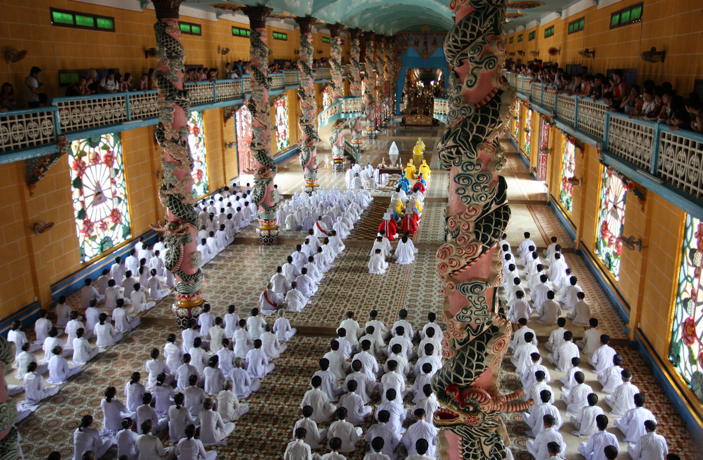

Language
Các con cáo nâu nhanh chóng nhảy qua chú chó lười biếng
Meaning: The quick brown fox jumped over the lazy dog
Culture
The culture of Vietnam is one of the oldest in Southeast Asia, with the ancient Bronze age Dong Son culture being widely considered one of its most important progenitors.Due to 1000 years of Chinese rule, Vietnam was heavily influenced by Chinese culture in terms of politics, government, Confucian social and moral ethics, and art. Vietnam is considered to be part of the East Asian cultural sphere.
In the socialist era, the cultural life of Vietnam has been deeply influenced by government-controlled media and the cultural influences of socialist programs. For many decades, foreign cultural influences were shunned and emphasis placed on appreciating and sharing the culture of communist nations such as the Soviet Union, China, Cuba and others. Since the 1990s, Vietnam has seen a greater re-exposure to Asian, European and American culture and media.
Some elements generally considered to be characteristic of Vietnamese culture include ancestor veneration, respect for community and family values, handicrafts and manual labour, and devotion to study. Important symbols present in Vietnamese culture include dragons, turtles, lotuses and bamboo.
Media
Vietnam moves toward a free-market economy with its doi moi measures, the government has relied on the print media to keep the public informed about its policies. The measure has had the effect of almost doubling the numbers of newspapers and magazines since 1996.
Current large Vietnamese-language newspapers include Tuoi Tre (Youth, published in Ho Chi Minh City, described as a "reformist" newspaper), Thanh Nien (Youth), Ngu?i Lao Ð?ng (Labour or The Worker), Tien Phong (Vanguard), Sai Gon Giai Phong (Liberated Saigon), and Hàn?im?i (New Hanoi). Prominent French language newspapers include Saigon Eco and Le Courrier du Vietnam. There are other, smaller provincial newspapers such as the Ba Ria Vung Tau Daily Newspaper. The largest online newspapers are VnExpress, VietNamNet, Tu?i Tr?, Thanh Niên, Dân Trí, VTC News, and VietnamPlus. The largest online news aggregator in Vietnam is Báo M?i, Chaobuoisang.net
Music
Raditional Vietnamese music is highly diverse and syncretistic, combining native and foreign influences. Throughout its history, Vietnam has been most heavily influenced by the Chinese musical tradition, as an integral part, along with Korea, Mongolia and Japan.[1] The former Indochinese kingdom of Champa also exerted some influence (albeit more minor when compared to China) on Vietnam's traditional music.
Nhã nh?c is the most popular form of imperial court music, specifically referring to the court music played from the Tr?n dynasty to the very last Nguy?n dynasty of Vietnam, being synthesized and most highly developed by the Nguy?n emperors. Along with nhã nh?c, the imperial court of Vietnam in the 19th century also had many royal dances which still exist to this day. The theme of most of these dances is to wish the king longevity and the country wealth.
Classical music is also performed in honour of gods and scholars such as Confucius in temples. These categories are defined as Nhã Nh?c ("elegant music", ritual and ceremonial music), Ð?i nh?c ("great music"), and Ti?u nh?c ("small music") that was chamber music for the entertainment of the king.[2][3][4][5][6] In Vietnamese traditional dance court dances were defined as either van vu (civil servant dance) or vo vu (military dance).
Literature

Vietnamese literature is literature, both oral and written, created largely by Vietnamese-speaking people, although Francophone Vietnamese and English-speaking Vietnamese authors in Australia and the United States are counted by many critics as part of the national tradition. For a millennium before the 11th century, Vietnam was dominated by China and as a result much of the written work during this period was in Classical Chinese. Ch? nôm, created around the 10th century, allowed writers to compose in Vietnamese using modified Chinese characters. Although regarded as inferior to Chinese, it gradually grew in prestige. It flourished in the 18th century when many notable Vietnamese writers and poets composed their works in ch? nôm and when it briefly became the official written script. While the qu?c ng? script was created in the 17th century, it did not become popular outside of missionary groups until the early 20th century, when the French colonial administration mandated its use in French Indochina. By the mid-20th century, virtually all Vietnamese works of literature were composed in qu?c ng?.
Festivals

In Vietnam tradition there lies a wide range of colorful festivals and events, with the aim of as simple as entertaining the community or as meaningful as expressing respect to country's builders and heroes as well as commemorating remarkable events. The festivals and events listed below may take place on a nation scale or belong to specific regions. There are two main types of activities conducted in Vietnam's festivals: ceremonial rites and entertaining activities.
Most of the festivals, anniversaries and traditional cultural events of Vietnam are in accordance with its lunar calendar; however, nowadays, Christian calendar is widely used throughout the country. Annually, on the first day in this Western Calendar - January 1st, joining in the modern breathes of the world, Vietnam also celebrates the International New Year Day.
Lunar New Year Festival often falls between late January and early February; it is among the most important holidays in Vietnam. Officially, the festival includes the 1st, 2nd and 3rd day in Lunar Calendar; however, Vietnamese people often spend about nearly a month to celebrate this special event.
Among the very old days of the country, under the government of King An Duong Vuong (Thuc Phan), Vietnam was called Au Lac. The King decided to build Co Loa (located at Dong Anh District, Hanoi at present time) as the country's royal palace.
Tourism

Few countries have changed so much over such a short time as Vietnam. Less than forty years since the savagery and slaughter of the American War, this resilient nation is buoyant with hope. It is a country on the move: access is now easier than ever, roads are being upgraded, hotels are springing up and Vietnam’s raucous entrepreneurial spirit is once again alive and well as the old-style Communist system gives way to a socialist market economy. As the number of tourists visiting the country soars, their talk is not of bomb craters and army ordnance but of shimmering paddy fields and sugar-white beaches, full-tilt cities and venerable pagodas; Vietnam is a veritable phoenix arisen from the ashes.
Read more: http://www.roughguides.com/ destinations/asia/vietnam/#ixzz3syWqJJXL
Clothing

From the twentieth century onward Vietnamese people have also worn clothing that is popular internationally. The Áo dài was briefly banned after the fall of Saigon but made a resurgence. Now it is worn in white by high school girls in Vietnam. It is also worn by receptionists and secretaries.Styles differ in northern and southern Vietnam.The current formal national dress is the áo dài for women, suits or áo the for men.
http://www.vietnam-culture.com/zones-10-1/Vietnamese-Clothing.aspxSport

Football is the most popular sport in Vietnam. Sports and games such as badminton, tennis, ping pong, and chess are also popular with large segments of the population. Women’s Volleyball is also extremely popular and is watched by large sections of the country. Vietnam has participated in the Olympic Games since 1952, however did not with their first medal until Tran Hieu Ngan claimed a silver medal in the women’s tae kwon do at the 2000 Summer Games in Sydney. Vietnam is a strong competitor in the fields of martial arts and sepak takraw at the Asian Games and the Southeast Asian games. The 3rd Asian Indoor Games is also to be held in Vietnam, the host cities being Hanoi and Ho Chi Minh.
Cuisine

Vietnamese cuisine encompasses the foods and beverages of Vietnam, and features a combination of five fundamental tastes (Vietnamese: ngu v?) in the overall meal.Each Vietnamese dish has a distinctive flavor which reflects one or more of these elements. Common ingredients include fish sauce, shrimp paste, soy sauce, rice, fresh herbs, and fruits and vegetables. Vietnamese recipes use lemongrass, ginger, mint, Vietnamese mint, long coriander, Saigon cinnamon, bird's eye chili, lime, and Thai basil leaves.Traditional Vietnamese cooking is greatly admired for its fresh ingredients, minimal use of dairy and oil, complementary textures, and reliance on herbs and vegetables. With the balance between fresh herbs and meats and a selective use of spices to reach a fine taste, Vietnamese food is considered one of the healthiest cuisines worldwide.
Salt is used as the connection between the worlds of the living and the dead. Bánh phu thê is used to remind new couples of perfection and harmony at their weddings. Food is often placed at the ancestral altar as an offering to the dead on special occasions (such as Lunar New Year). Cooking and eating play an extremely important role in Vietnamese culture. The word an (eat) is included in a great number of proverbs and has a large range of semantic extensions.